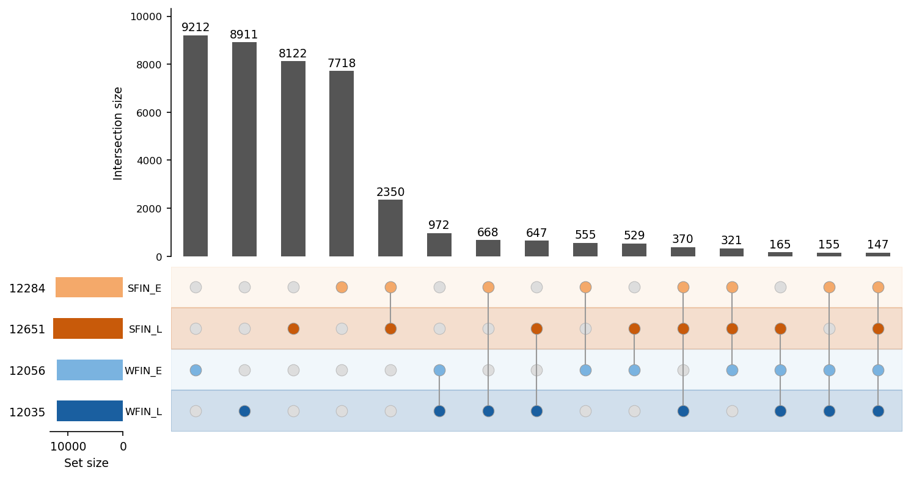
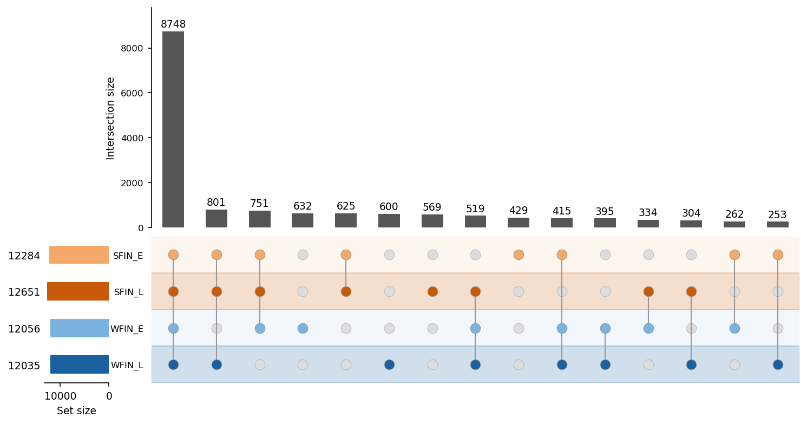
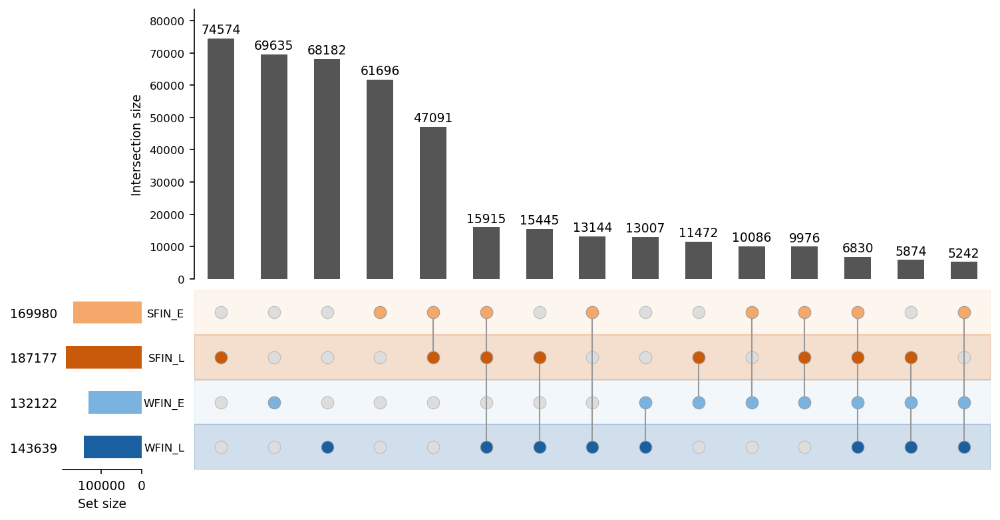

Comparison of SNPs under fluctuating selection across populations using three approaches:
- exact SNP overlap on thinned SNPs data.
- gene-level overlap (using thinned SNPs data).
- exact SNP overlap on all SNPs, before thinning.
Tables show pairwise overlaps (diagonal = population SNPs count, off-diagonal = shared count and % shared).
UpSet plot shows the size of all exclusive intersections across populations, each bar represents SNPs or genes found only in that specific combination of populations.
Overlap of exact SNP positions across populations using thinned files (1 SNP per gene, lowest p-value selected).
| SFIN_E | SFIN_L | WFIN_E | WFIN_L | |
|---|---|---|---|---|
| SFIN_E | 12284 | |||
| SFIN_L | 3188 | 26.0% | 12651 | ||
| WFIN_E | 1178 | 9.8% | 1162 | 9.6% | 12056 | |
| WFIN_L | 1340 | 11.1% | 1329 | 11.0% | 1439 | 12.0% | 12035 |

Overlap at the gene level across populations using thinned files.
| SFIN_E | SFIN_L | WFIN_E | WFIN_L | |
|---|---|---|---|---|
| SFIN_E | 12284 | |||
| SFIN_L | 10925 | 88.9% | 12651 | ||
| WFIN_E | 10176 | 84.4% | 10352 | 85.9% | 12056 | |
| WFIN_L | 10217 | 84.9% | 10372 | 86.2% | 10077 | 83.7% | 12035 |

Overlap of all fluctuating SNPs before thinning
| SFIN_E | SFIN_L | WFIN_E | WFIN_L | |
|---|---|---|---|---|
| SFIN_E | 169980 | |||
| SFIN_L | 79812 | 47.0% | 187177 | ||
| WFIN_E | 32134 | 24.3% | 34152 | 25.8% | 132122 | |
| WFIN_L | 41131 | 28.6% | 44064 | 30.7% | 30953 | 23.4% | 143639 |
